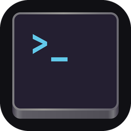

Max's Tweaks
Jailbreak tweaks by Max · 147 packages
Repository URL
Copy
Add to Sileo
Add to Zebra
Add to Cydia
Desktop
5
Xios Desktop (GNOME)
Real GNOME Shell on your iPad, one install
v0.1.0
Xios Desktop (KDE Plasma Mobile)
KDE Plasma Mobile on the iPad GPU
v0.1.0
Xios Desktop (Native iPadOS)
Linux apps as regular iPad windows
v0.1.0
Xios Desktop (X11)
The classic X11 path, kept alive
v0.1.0
Xios Desktop Core
The shared base every Xios desktop flavor builds on
v0.1.0
Tweaks
2
AutoLockPicker
Set any Auto-Lock time with a picker
v0.1.0
PullToRespring2
Pull down in Settings to respring
v2.0.1
Utilities
10
fontconfig
generic font configuration library - support binaries
v2.14.0
fontconfig-config
generic font configuration library - configuration
v2.14.0
gobject-introspection
Generate interface introspection data for GObject libraries
v1.78.0
gtk-3-bin
Programs for the GTK graphical user interface library
v3.24.38
gtk-4-bin
Programs for the GTK 4 graphical user interface library
v4.14.5+wl1
libarchive13
Multi-format archive and compression library
v3.7.2
libglib2.0-bin
Programs for the GLib library
v2.78.0
libglib2.0-dev-bin
Development utilities for the GLib library
v2.78.0
libgraphite2-utils
Font rendering engine for Complex Scripts -- utilities
v1.3.14
libharfbuzz-bin
OpenType text shaping engine (utility)
v2.8.1
X11
16
iosc (Wayland compositor)
GPU Wayland compositor for the Xios desktop
v0.8.0
iosc (Wayland compositor)
GPU Wayland compositor for the Xios desktop
v0.9.1
iosc desktop shell
lightweight desktop shell for the iosc compositor
v0.9.6
iosc desktop shell
lightweight desktop shell for the iosc compositor
v0.9.7
libx11-data
X11 client-side library
v1.7.3.1
San Francisco fonts for X11
San Francisco as the default X11 font
v1.0.0
tigervnc-common
Shared files for TigerVNC (Xvnc) on rootless
v1.11.0+rootless1
tigervnc-standalone-server
Run an X11 desktop over VNC on rootless jailbreaks
v1.11.0+rootless1
xauth
X authentication utility
v1.1
Xios (IOSurface X server)
The fast native X11 server for the Xios app
v1.20.11+ios2
Xios desktop defaults
Retina and desktop defaults for Xios
v1.1.1
Xios desktop theme
Adwaita cursors and wallpaper for the Xios desktop
v1.1.0
Xios session launcher
pick-a-desktop session launcher for the Xios stack
v1.0.2
xkbcomp
The xkbcomp keymap compiler converts a description of an XKB keymap into one of several output formats
v1.4.5
xkeyboard-config
The non-arch keyboard configuration database for X Window
v2.32
Xvfb (virtual framebuffer X server)
Headless X11 server (Xvfb) for rootless jailbreaks
v1.20.11+rootless1
Development
29
ANGLE (GLES via Metal)
Hardware OpenGL ES via ANGLE on Metal
v2.1.0+git20260630.a32d31d+es3-2
ANGLE (GLES via Metal)
Hardware OpenGL ES via ANGLE on Metal
v2.1.0+git20260630.a32d31d+es3
d-spy
D-Spy (GTK4 D-Bus explorer)
v1.10.0
libatk1.0-dev
Development files for the ATK accessibility toolkit
v2.38.0
libcairo2-dev
Development files for the Cairo 2D graphics library
v1.16.0-3
libeditorconfig-dev
Development files for EditorConfig core
v0.12.11
libepoll-shim-dev
Development files for epoll-shim
v0.0.20240608
libepoxy-dev
OpenGL function pointer management library- development
v1.5.7+angle1
libfontconfig-dev
generic font configuration library - development
v2.14.0
libfribidi-dev
Development files for FreeBidi library
v1.0.13
libgdk-pixbuf-2.0-dev
Development files for the GDK Pixbuf library
v2.42.12
libgee-0.8-dev
Development files for libgee
v0.20.8
libgirepository-1.0-dev
Library for handling GObject introspection data (development files)
v1.78.0
libgjs-dev
JavaScript bindings for GNOME (development files)
v1.78.0
libglib2.0-dev
Development files for the GLib library
v2.78.0
libgnome-desktop-dev
Development files for libgnome-desktop-4
v44.1
libgraphene-1.0-dev
Development files for the graphene library
v1.10.8
libgraphite2-dev
Development files for libgraphite2
v1.3.14
libgtk-3-dev
Development files for the GTK library
v3.24.38
libgtk-4-dev
Development files for the GTK library
v4.14.5+wl1
libharfbuzz-dev
Development files for OpenType text shaping engine
v2.8.1
libmozjs-115-dev
JavaScript engine (SpiderMonkey 115) — development files
v115.12.0
libpango1.0-dev
Development files for the Pango text layout library
v1.50.14
libpsl-dev
Development files for libpsl
v0.21.5
libsoup-3.0-dev
Development files for libsoup 3
v3.4.4
libwayland-dev
Development files for the Wayland libraries
v1.23.1
libxinerama-dev
X11 Xinerama extension library (development headers)
v1.1.4
libxkbcommon-dev
Development files for libxkbcommon
v1.7.0
wayland-protocols
Wayland protocol extension definitions
v1.38
Libraries
72
dbus
Simple interprocess messaging system (daemon, tools and library)
v1.14.10
gsettings-desktop-schemas
GSettings desktop-wide schemas
v46.1
gtk4-layer-shell
Layer Shell Wayland protocol for GTK4
v1.3.0
iso-codes
ISO code lists and translation tables
v4.15.0
libadwaita-1-0
GNOME building blocks for modern GTK4 applications
v1.5.0
libappstream5
Software component metadata library
v1.0.3
libatk1.0-0
ATK accessibility toolkit
v2.38.0
libcairo-gobject2
Cairo 2D vector graphics library (GObject library)
v1.16.0-3
libcairo-script-interpreter2
Cairo 2D vector graphics library (script interpreter)
v1.16.0-3
libcairo2
Cairo 2D vector graphics library
v1.16.0-3
libeditorconfig0
EditorConfig file parser library - runtime
v0.12.11
libepoll-shim0
epoll/timerfd/signalfd/eventfd on top of kqueue
v0.0.20240608
libepoxy0
OpenGL function pointer management library
v1.5.7+angle1
libfontconfig1
generic font configuration library - runtime
v2.14.0
libfontenc1
X11 font encoding library
v1.1.4
libfreetype6
FreeType 2 font engine, shared library files
v2.12.1
libfribidi0
Free Implementation of the Unicode BiDi algorithm
v1.0.13
libgdk-pixbuf-2.0-0
GDK Pixbuf library
v2.42.12
libgee-0.8-2
GObject collection library - runtime
v0.20.8
libgeneral0
Common library for tihmstar tools
v56-1
libgirepository-1.0-1
Library for handling GObject introspection data (runtime library)
v1.78.0
libgjs0
JavaScript bindings for GNOME (runtime library)
v1.78.0
libgl1-mesa-glx
free implementation of the OpenGL API -- GLX runtime
v21.0.2
libglapi-mesa
free implementation of the GL API -- shared library
v21.0.2
libglib2.0-0
GLib library of C routines
v2.78.0
libgnome-autoar-0-0
Automatic archive extraction/compression library - runtime
v0.4.5
libgnome-desktop-4-2
Shared GNOME desktop utility library (GTK4) - runtime
v44.1
libgraphene-1.0-0
thin layer of graphic data types
v1.10.8
libgraphite2-3
Font rendering engine for Complex Scripts -- library
v1.3.14
libgtk-3-0
GTK graphical user interface library
v3.24.38
libgtk-4-1
GTK graphical user interface library
v4.14.5+wl1
libgtkintl
proxy-libintl symbol shim for GTK on iOS
v1.0
libgtksourceview-5-0
Source-code editing widget for GTK4 - runtime
v5.12.1
libgtop-2.0-11
libgtop-2.0 stub (system monitoring) for GNOME on iOS
v2.41.3
libharfbuzz-gobject0
OpenType text shaping engine ICU backend (GObject library)
v2.8.1
libharfbuzz-subset0
OpenType text shaping engine (subset backend)
v2.8.1
libharfbuzz0b
OpenType text shaping engine (shared library)
v2.8.1
libjpeg62-turbo
libjpeg-turbo JPEG runtime library
v2.0.6
libjson-glib-1.0-0
GLib JSON manipulation library - runtime
v1.8.0
libmozjs-115-0
SpiderMonkey JavaScript engine (mozjs 115)
v115.12.0
libmpc3
multiple precision complex floating-point library
v1.2.1
libmpfr6
multiple precision floating-point computation
v4.1.0
libpango-1.0-0
Layout and rendering of internationalized text
v1.50.14
libpixman-1-0
The pixel-manipulation library for X and cairo
v0.40.0
libpng16-16
PNG library - runtime (version 1.6)
v1.6.37-2
libportal-gtk4-1
Flatpak portal library - runtime (GTK4 backend)
v0.7.1
libportal1
Flatpak portal library - runtime (core)
v0.7.1
libpsl5
Public Suffix List library - runtime
v0.21.5
libsoup-3.0-0
HTTP client/server library for GNOME (libsoup 3) - runtime
v3.4.4
libtracker-sparql-3.0-0
Tracker SPARQL store library - runtime
v3.7.3
libunistring5
Unicode string library for C
v1.2
libuuid16
Universally Unique ID library
v1.6.2-3
libvte-2.91-gtk4-0
Terminal emulator widget for GTK4 - runtime
v0.76.6
libwayland0
Wayland client, server, cursor and EGL libraries
v1.23.1
libx11-6
X11 client-side library
v1.7.3.1
libxau6
X11 authorisation library
v1.0.9-1
libxcb-render0
X C Binding, render extension
v1.14
libxcb1
X C Binding
v1.14
libxcursor-dev
X cursor management library
v1.2.0
libxcursor1
X cursor management library
v1.2.0
libxdamage1
X11 damaged region extension library
v1.1.5
libxdmcp6
X11 Display Manager Control Protocol library
v1.1.3
libxext6
X11 miscellaneous extension library
v1.3.4-1
libxfixes3
X11 miscellaneous 'fixes' extension library
v5.0.3
libxfont2
X11 font rasterisation library
v2.0.4
libxinerama1
X11 Xinerama extension library
v1.1.4
libxkbcommon0
Library to handle keyboard descriptions (XKB)
v1.7.0
libxkbfile1
X11 keyboard file manipulation library
v1.1.0
libxml2
GNOME XML library
v2.9.12
libxmlb2
Library to help create and query binary XML blobs
v0.3.14
libxmuu1
X11 miscellaneous micro-utility library
v1.1.3-1
libyaml-0-2
Fast YAML 1.1 parser and emitter library
v0.2.5
Applications
7
baobab
GNOME Disk Usage Analyzer (Baobab, GTK4)
v46.0
file-roller
File Roller (GNOME archive manager, GTK4)
v44.7
gnome-calculator
GNOME Calculator, from arithmetic to algebra
v46.2

gnome-console
GNOME Console, a clean modern terminal
v46.0
gnome-font-viewer
Preview and inspect fonts
v46.0
gnome-text-editor
GNOME Text Editor, simple and modern
v46.3
nautilus
GNOME Files, the file manager
v46.4
Games
1
hitori
Hitori (GNOME logic puzzle)
v44.0
Interpreters
1
gjs
JavaScript interpreter for GNOME
v1.78.0
Introspection
2
gir1.2-freedesktop
Introspection data for some FreeDesktop components
v1.78.0
gir1.2-glib-2.0
Introspection data for GLib, GObject, Gio and GModule
v1.78.0
x11
2
adwaita-icon-theme
Adwaita icon theme - GNOME default symbolic + colour icons for GTK3/GTK4/libadwaita apps
v46.0
hicolor-icon-theme
Default fallback icon theme (hicolor base for all icon themes)
v0.17